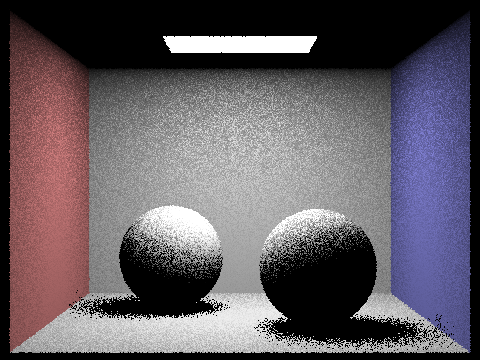
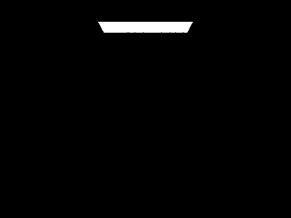

Back to Homepage
Overview
In this project, we will implement a pathtracer, from the generation of rays, checking for intersections on the scene, accelerating that process through Bounding Volumes Hierarchy, implementing Global Illumination and improving rendered images quality through Adaptative Sampling.
============================================================================================
Part 1: Ray Generation and Scene Intersection
In raytrace_pixel(), we initialize the pixel_radiance to a zero Vector3D for accumulating the radiance from each sample. we generate a loop of num_samples camera rays for each pixel (x,y) in the image. For each sample, a random point on the pixel is generated using the get_sample method of the gridSampler object. The x and y coordinates of this sample point are then normalized to the range [0,1] which is ((x + sample.x) / sampleBuffer.w, (y + sample.y) / sampleBuffer.h) and passed to the generate_ray method, which generates a ray that starts at the camera position pos and passes through the corresponding point on the canonical sensor plane.
Triangle Intersection
In my implementation of triangle intersection, I used Moller-Trumbore algorithm to determine whether a given ray intersects a triangle in 3D space. The function has_intersection tests whether an intersection occurs between the given ray and the triangle, while the function intersect updates the Intersection data when an intersection is found. I start by computing the normal of the triangle using the cross product of two of its edges. I then check whether the ray is parallel to the triangle plane by calculating the dot product of the cross product of the ray direction and one of the triangle edges with another edge. If the dot product is zero, the ray is parallel to the triangle and no intersection occurs.If the ray is not parallel to the triangle, then I calculate the intersection point with the triangle plane by computing the dot product of the ray origin and one of the triangle edges with another edge, and then dividing by the dot product computed earlier. It then calculates the barycentric coordinates of the intersection point with respect to the triangle vertices by computing the dot products of the intersection point with the triangle edges and their corresponding normals. If any of the barycentric coordinates is negative, the intersection point is outside the triangle and no intersection occurs. If an intersection is found, the Intersection struct is then updated with the intersection point, normal, primitive (which in this case is the triangle), and the BSDF (bidirectional scattering distribution function) of the mesh. The maximum t-value of the ray is updated and the function returns true to indicate an intersection.Finally, the maximum t-value of the ray is updated to the intersection time, and the function returns true to indicate that an intersection has occurred.
Spheres Intersection
I implement it with involving solving a quadratic equation based on the properties of the sphere and the ray, where the coefficients a, b, and c are calculated from the ray's direction and origin, and the sphere's center and radius. The discriminant is then calculated to determine if the quadratic equation has real solutions. If it is negative, then there are no real solutions and I return false, indicating that there is no intersection. If the discriminant is non-negative, I calculate two solutions t1 and t2. If the discriminant is zero, then both solutions are the same. I then check if either t1 or t2 lies within the range of the ray's minimum and maximum t values. If one of them does, then there is an intersection and I update the Intersection data correspondingly. I calculate the normal vector of the sphere at the intersection point, set the Intersection's primitive to the sphere, and assign a BSDF to the Intersection. Finally, I return true if there is an intersection and false if there is not.
|
|

|

|

|
============================================================================================
Part 2: Bounding Volume Hierarchy
In order to accelarate the rendering of different images, we were tasked to implement a BVH construction algorithm. In a very general sense, a BVH is an algorithm where the primitives in the scene are divided into bounding boxes recursively, until a certain termination criteria is met, and the way this is used to accelarate the rendering is that instead of testing for intersections with every primitive in the scene, we first test for intersections with these bounding boxes, and then with the primitives inside of it. This way, if a ray does not intersect with a bounding box, we don't check for intersections with the primitives in it, saving the time and resources it would take to check for those.
The BVH is structured in a tree-like, node format. The root node represents the total of primitives in the scene, and each leaf node is a final bounding box with primitives in it. The internal nodes contain references to the two nodes it splits into, left and right. Therefore, when checking for intersections in the BVH, we use the leaf nodes that contain the divided bounding boxes and their primitives.
The BVH construction algorithm we implemented is quite simple. We are given a vector of primitives and the termination criteria max_leaf_size, which
defines the max amount of primitives a leaf node can contain, and we must return a node. The first thing we do is check whether this vector of primitives is smaller than the
max_leaf_size. If it is, then this means that this node is a leaf node, and therefore does not need to be further divided, so we simply return the
node defined by the primitive vector and the resulting bounding box. If it is bigger than max_leaf_size, we must use recursion to split the primitives
into two nodes until only the leaf nodes are left. To determine the splitting point of a bounding box, we calculated the mean of the primitives' centroid
position, and we split the primitives based on the longest axis of the bouding box. This was done through the partition() function and a custom
comparator function that checks each primitive's centroid relative to the splitting point. The partition() function rearranges the primitive
vector so that the primitives of the left node are first, and returns a reference to the primitive that signalizes the point in the vector where the right
node primitives start. In order to prevent empty nodes, we check whether either side of the division is empty, and then assign the current node's left and
right by calling construct_bvh() again with the each side's respective primitives.
With the implementation of the BVH, we can now render large images that would take too long otherwise, such as maxplanck.dae or CBlucy.dae, which contain tens to hundreds of thousands of triangles:
|
|
|
The BVH decreased rendering times tremenduosly. Without this implementation, when rendering cow.dae,there were an average of 1386.10 intersection tests per ray. After, it averaged to 2.69 intersection tests per ray. This reduction of tests performed caused the time to render to go from 84.79s to 0.1736s. The table below shows a comparison of the rendering times and average intersection tests per ray of a few dae files with and without BVH, which clearly show how rendering with the BVH is faster.
| teapot.dae | BVH teapot.dae | cow.dae | BVH cow.dae | bunny.dae | BVH bunny.dae | |
|---|---|---|---|---|---|---|
| Rendering time | 31.5576s | 0.1795s | 84.79s | 0.1736s | 471.4405s | 0.2936s |
| Average intersection tests per ray | 594.25 | 2.09 | 1386.10 | 2.69 | 8374.27 | 2.67 |
============================================================================================
Part 3: Direct Illumination
Now that we are able to render more complex scenes with normal shading in a very short amount of time, we will begin implementing realisting shading. In
this part, we implement direct illumination. This is done through the functions zero_bounce_radiance(), one_bounce_radiance(), estimate_direct_lighting_hemisphere(),
estimate_direct_lighting_importance() and est_radiance_global_illumination(). Apart from these functions, we also had to implement
Diffuse BSDF so that we could get the needed information of the materials to calculate the lighting of the scene.
The zero_bounce_radiance() function was easy enough to implement, having simply to return the emission of the light source, acquired through
the bsdf, since it represents light directly from a source with no intersections before reaching the camera. one_bounce_radiance() returns the
lighting that results from a single-bouce reflection, and it achieves that through either estimate_direct_lighting_hemisphere() or
estimate_direct_lighting_importance(), both methods to estimate the direct lighting on a point, differing only in how they perform the light
sampling.
estimate_direct_lighting_hemisphere() receives a ray directed from the camera to the scene and an intersection with an object. It then uses a
Monte Carlo estimator to estimate the incoming light in the hit point of that intersection. It samples rays uniformly originating from the hit point in a hemisphere through a
probability density function, and checks if any of these rays intersect a light source. If it does, we calculate an estimation of the incoming light from
that light source in that direction through the bsdf value of the object and the light source's emission and the incoming angle, as described by the reflection
equation, averaging it by the probability density function, and add the value to the L_out vector of the hit point. Otherwise, if the sampled ray does not
intersect with a light source, we do not add any lighting. The L_out value is then averaged by the amount of samples taken, returning the outgoing light from
that hit point.
estimate_direct_lighting_importance() calculates the outgoing light similarly through a Monte Carlo estimator, however it differs in the way it
samples. In importance sampling, instead of sampling uniformly in a hemisphere around the hit point, it samples rays from the scene's light sources directed
at the hit point. This also allows us to sample images with point lights, since uniform hemisphere sampling does not guarantee intersections with a specific
point in the scene. We do this by iterating over the lights in the scene and sampling rays from the light source to the hit point. For performance's sake,
we only sample for point lights once, since other samples would be identical. We then check if that sampled ray intersects with any objects before hitting
the hit point. If it does, it means it does not hit the point directly, and therefore we add no lighting. If it doesn't, we estimate the incoming light
in the same way we do in the estimate_direct_lighting_hemisphere() function. Once again, we average the outgoing light by the number of samples
taken and return it.
We then modify the est_radiance_global_illumination() function in order to return direct lighting instead of normal shading. The images below
show two scenes rendered with Uniform Hemisphere Sampling and Light Sampling.
|
|

|
|
|
|
From the images above, we can see how Light Sampling generates a smoother image than Uniform Hemisphere Sampling. This happens because in Uniform Hemisphere Sampling, the sampled rays are not guaranteed to be even be directed at a light souce. Therefore, many of the samples are "wasted", and only the few that actually intersect the light sources can be used to estimate the lighting. When using Light Sampling, however, since the samples are generated from the light sources to the hit point, we know that all of the samples are directed at a light source, and therefore we can estimate the outgoing light more accurately by seeing which of these samples connect the light source and hit point directly. Besides, Light Sampling is also better in that it can guarantee samples from point lights, while Uniform Hemisphere Sampling does not guarantee that any samples will hit that point source.
The images below also show a comparison of CBspheres_lambertian.dae rendered with Light Sampling, with 1 sample per pixel, with different amounts of samples per area light.
|

|
|
|
|
|
In the images above, we can see how as the amount of samples per area light increases, the amount of noise in the soft shadows decreases. This happens because by sampling a bigger amount of rays from the light source we can estimate the outgoing light at each point more accurately, since there is a bigger chance of sampled rays hitting the hit point directly without intersecting with obstacles. With lower samples, there is a higher probability that none of the samples hit the point, providing us with false dark points, or that all of them hit the point, providing us with false white points.
============================================================================================
Part 4: Global Illumination
In my at_least_one_bounce_radiance implementation, first, I compute the direct illumination at the intersection point using the one_bounce_radiance function and add to L_out. After that, I determine whether to trace an indirect bounce or not by coin_flip() function and checking the maximum depth of the ray. If either the ray depth is less than max_ray_depth - 1 or coin_flip(1 - termin_prob) is true , then I start to compute the radiance contribution from the indirect bounce. The probability of terminating the recursion is set by the variable termin_prob, I used 0.3 as termination probability and thus 0.7 as continuation probability. We first sample the BSDF to get a direction for the incoming ray. The BSDF gives the probability density of scattering light in different directions for a given surface point. After that, I transform the incoming direction from the object space to the world space, and computes the hit point of the incoming ray. then I create a new ray with the hit point as the origin and the incoming direction as the direction of the ray, and checks for intersection with the scene geometry using the BVH acceleration structure. If an intersection is found, then it recursively calls the at_least_one_bounce_radiance function to compute the radiance contribution from the indirect bounce. Finally, I compute the radiance contribution from the indirect bounce by multiplying the computed radiance with the sampled BSDF value, dividing both sampling PDF and the Russian Roulette continuation probability(at_least_one_bounce_radiance(ray, intersec) * bsdf1 * w_in.z / pdf / (1 - termin_prob)). we then add the computed radiance to the output radiance variable. The function returns the total radiance at the given intersection point, which is the sum of the direct and indirect illumination. If the maximum allowed depth is 0, the function returns the radiance for zero bounces, computed using the "zero_bounce_radiance" function.
The following images show CBspheres_lambertian.dae and CBlucy.dae rendered with global illumination, with 1024 samples per pixel. In the rendered image of CBlucy.dae, Lucy is shows as black since she the object does not use a Diffuse BSDF.
|
|
|
The images below show CBspheres_lambertian.dae with isolated direct and indirect lighting, with 1024 samples per pixel.
|
|
|
For comparison, the following images show CBbunny.dae rendered with 1024 samples per pixel and 4 light rays with different values of max_ray_depth:
|

|
|
|
|

|
|
|
When max_ray_depth is set to 0, only direct lighting is considered, and there are no reflections or with no shadows. When the maximum ray depth is set to 1, the resulting image includes only direct illumination, and it shows some shadows and reflections, the roof is still black and still lacking in detail and realism. As the maximum ray depth is increased to 2 and 3, the rendered images include additional indirect bounces, the resulting image has more detailed shadows and reflections and a more realistic appearance, the image looks lighter as max_ray_depth increases. The differences are not that noticeable as max_ray_depth is increased past 1.
Also for comparison, the following images show bunny.dae rendered with 4 light rays and max_ray_depth of 5 with various sample per pixel rates:

|
|
|
|
|
|
|
|
|
|
When the sample-per-pixel rate is set to 1, the rendered image has very low quality and is very noisy, as each pixel is only sampled once. As the sample-per-pixel rate is increased to 2, 4, and 8, the rendered images become less noisy, but still lack detail and have visible pixelation. When the sample-per-pixel rate is increased to 16 and 64, the rendered images has even less noise and more detail, resulting in a smoother and more realistic appearance. Finally, when the sample-per-pixel rate is set to 1024, the rendered image has the least amount of noise and the most detail, resulting in a very smooth and realistic appearance. However, this requires a lot of computational resources and time to render.
============================================================================================
Part 5: Adaptive Sampling
Adaptive sampling is to improve the quality of the rendered image by selectively increasing the number of samples in regions where there is high variance in the radiance values. it dynamically adjusts the number of samples taken for each pixel based on the variance in the radiance values calculated so far. This helps to reduce the amount of noise in the image, resulting in a smoother and more accurate representation of the scene.
In my implementation of adaptive sampling, we start by taking a fixed number of samples (num_samples) for each pixel and averaging the results. However, instead of stopping at a fixed number of samples, I use adaptive sampling to check the convergence of the results after each batch of samples (samplesPerBatch). The convergence is determined by computing the confidence interval (ci) of the mean radiance value from the previous batches. we calculate the mean, variance, and confidence interval (using a significance level of 1.96) of the radiance values accumulated so far. If the confidence interval (ci) around the mean is within a certain tolerance, the loop is terminated and the average radiance estimate for that pixel is returned. If the confidence interval is not within the tolerance, we continue sampling until we reach num_samples or until the confidence interval condition is met. We accumulate the radiance values for each sample, and at the end of the loop, we divide the accumulated radiance by the number of samples to get the average radiance value for the pixel. It allocates more samples to pixels with high visual complexity and fewer to pixels with low complexity, resulting in a faster and more efficient rendering process.
In both bunny and sphere images below, we can see that the sampling rate changes depending on the complexity of the scene and the level of detail in different regions of the image. The area light sources, being simple and emissive, require very few samples to converge as they are not affected by the objects in the scene. In regions with fewer objects and simple surfaces, such as the background wall and the floor, the sampling rate is relatively low and the number of samples per pixel is lower, it uses fewer samples in areas of the scene with more uniform lighting. However, in regions with more complex geometry and finer details, such as the bunny and spheres model itself, the sampling rate is higher and the number of samples per pixel is increased to reduce noise and improve the image quality. This ensures that the final image has a consistent level of quality across all regions while optimizing the computation time.
|
|
|
|
|
|
============================================================================================